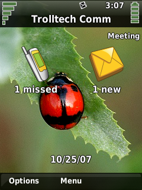
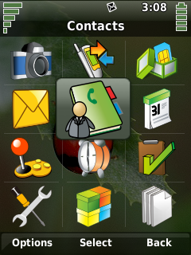

|
Home · All Namespaces · All Classes · Grouped Classes · Modules · Functions | |
Qt Extended has a powerful theming engine, allowing much of the user interface to be customized and personalized.
Components of the user interface such as Title Bar, Home Screen, Call Screen, Context Bar use Themed Views to facilitate customization.
These are defined by XML files describing a hierarchical group of visual and formatting elements. Themed Views contain theme elements which define the layout and structure of components. Each of these elements is assigned attributes to customize visual appearance and placement.
Refer to:
for detailed information.
In addition to simple vector content, themes can conditionally contain rich QWidget content. The Qt Extended home screen has been enabled in this way, and widgets can be added using the HomeScreenWidgets class.
It is also possible to provide color schemes and custom icons with a theme.
Theming code examples are available on the: Tutorials page.
The main components required to create a theme are:
 |  |
| Component | Description |
|---|---|
| Title Bar | Contains elements that require defined positions including:
|
| Home/Call Screen | Displays commonly accessed information such as:
|
| Context Bar |
|
| Window Decorations | Refer to: Window Decoration Tutorial |
Widget style and icons can help to complete the effect, however since these are far more time consuming to produce it is common to use those provided by an existing theme.
Code examples are available at: Theming Tutorials.
To install a modified theme run :
cd $QPEDIR
bin/qbuild image
To install a new theme follow these steps :
Installing a new theme also requires the following files:
| File | Location | Description |
|---|---|---|
| Theme Project File | $QPEDIR/etc/themes/ | defines the files to be installed for the theme. |
| Theme Configuration File | $QPEDIR/etc/themes/ | defines the theme. |
| Copyright © 2009 Trolltech | Trademarks | Qt Extended 4.4.3 |